高相关：
https://arxiv.org/abs/2006.08662
Authors: M. Caleb, B. W. Stappers, T. D. Abbott et al.
Comments: Accepted for publication in MNRAS
We present 11 detections of FRB 121102 in ~3 hours of observations during its 'active' period on the 10th of September 2019. The detections were made using the newly deployed MeerTRAP system and single pulse detection pipeline at the MeerKAT radio telescope in South Africa. Fortuitously, the Nancay radio telescope observations on this day overlapped with the last hour of MeerKAT observations and resulted in 4 simultaneous detections. The observations with MeerKAT's wide band receiver, which extends down to relatively low frequencies (900-1670 MHz usable L-band range), have allowed us to get a detailed look at the complex frequency structure, intensity variations and frequency-dependent sub-pulse drifting. The drift rates we measure for the full-band and sub-banded data are consistent with those published between 600-6500 MHz with a slope of -0.147 +/- 0.014 ms^-1. Two of the detected bursts exhibit fainter 'precursors' separated from the brighter main pulse by ~28 ms and ~34 ms. A follow-up multi-telescope campaign on the 6th and 8th October 2019 to better understand these frequency drifts and structures over a wide and continuous band was undertaken. No detections resulted, indicating that the source was 'inactive' over a broad frequency range during this time.
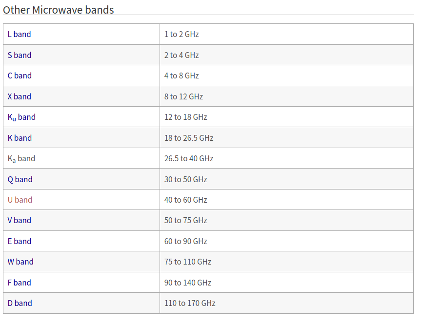
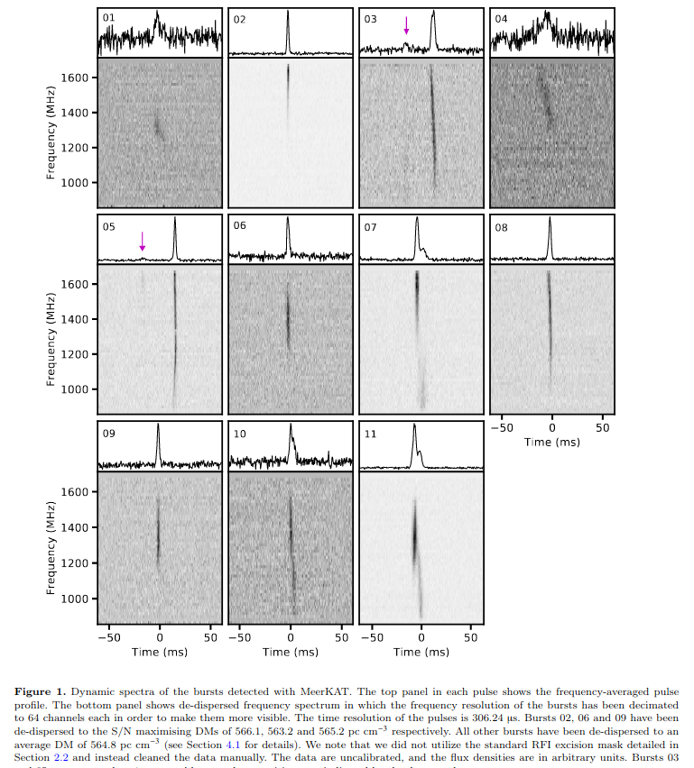
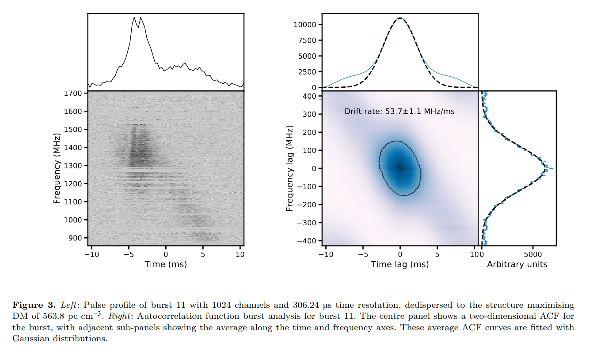
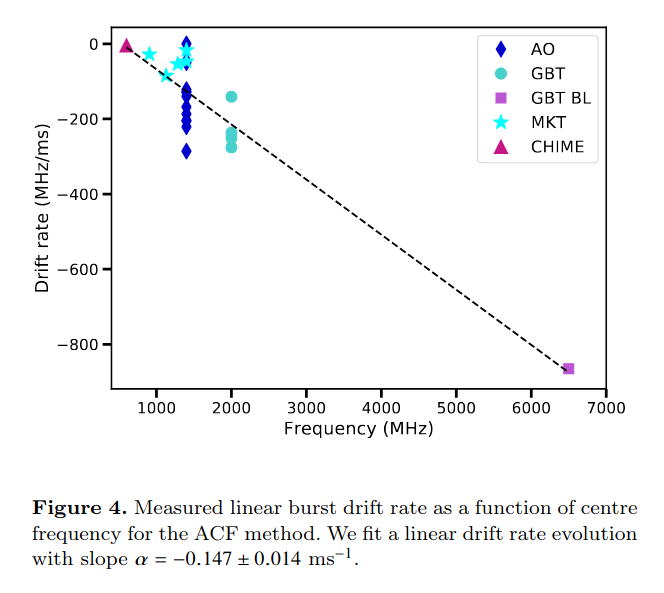
中相关：
https://arxiv.org/abs/2006.08757
Authors: J. Eagle, S. Marchesi, M. Ajello, D. Castro, A. Vendrasco
Comments: 9 pages, 6 figures
We report on the investigation of a very high energy (VHE), Galactic gamma-ray source recently discovered at >50GeV using the Large Area Telescope (LAT) on board the Fermi Gamma-Ray Space Telescope. This object, 2FHL J1703.4-4145, displays a very hard >50GeV spectrum with a photon index ~1.2 in the 2FHL catalog and, as such, is one of the most extreme sources in the 2FHL sub-sample of Galactic objects. A detailed analysis of the available multi-wavelength data shows that this source is located on the western edge of the supernova remnant (SNR) G344.7--0.1, along with extended TeV source, HESS J1702-420. The observations and the spectral energy distribution modeling support a scenario where this gamma-ray source is the byproduct of the interaction between the SNR shock and the dense surrounding medium, with escaping cosmic rays (CRs) diffusing into the dense environment and interacting with a large local cloud, generating the observed TeV emission. If confirmed, an interaction between the SNR CRs and a nearby cloud would make 2FHL J1703.4-4145 another promising candidate for efficient particle acceleration of the 2FHL Galactic sample, following the first candidate from our previous investigation of a likely shock-cloud interaction occurring on the West edge of the Vela SNR.
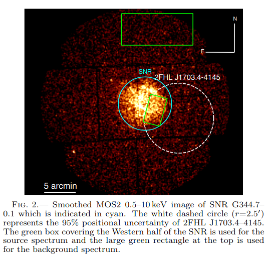
https://arxiv.org/abs/2006.08681
Authors: Héctor Martínez-Rodríguez, Laura A. Lopez, Katie Auchettl et al.
Comments: 9 pages, 4 figures, submitted to MNRAS
The explosive origin of the young supernova remnant (SNR) 3C 397 (G41.1-0.3) is debated. Its elongated morphology and proximity to a molecular cloud are suggestive of a core-collapse (CC) SN origin, yet recent X-ray studies of heavy metals show chemical yields and line centroid energies consistent with a Type Ia SN. In this paper, we analyze the full X-ray spectrum from 0.7-10 keV of 3C 397 observed with Suzaku and compare the line centroid energies, fluxes, and elemental abundances of intermediate-mass and heavy metals (Mg to Ni) to Type Ia and CC hydrodynamical model predictions. Based on the results, we conclude that 3C 397 likely arises from an energetic Type Ia explosion in a high-density ambient medium, and we show that the progenitor was a near Chandrasekhar mass white dwarf.
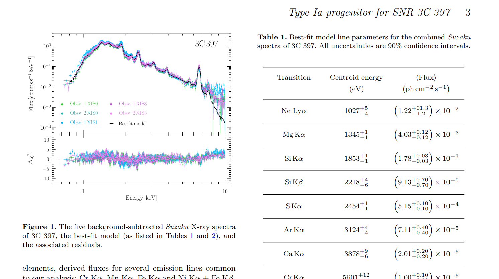
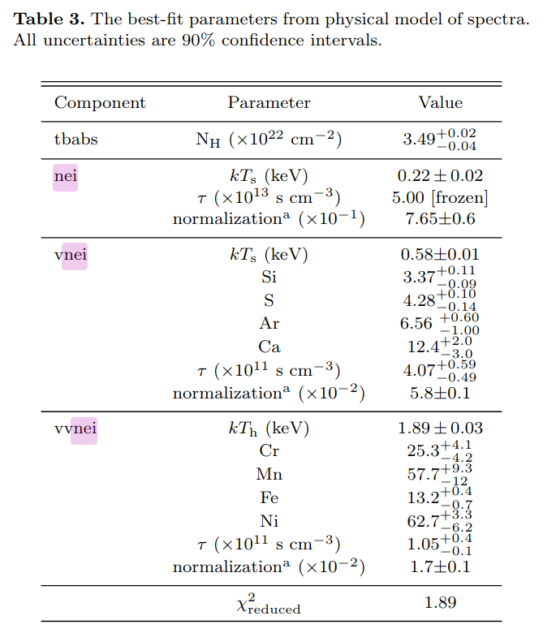
低相关：
高相关：
https://arxiv.org/abs/2006.09810
Authors: Anjasha Gangopadhyay, Kuntal Misra, D. K. Sahu et al.
Comments: 22 pages, 21 Figures, Accepted for publication in MNRAS
We present the photometric and spectroscopic studies of a Type Ib SN 2015ap and a Type Ic SN 2016P. SN 2015ap is one of the bright ( = −18.04 mag) Type Ib while SN 2016P lies at an average value among the Type Ic SNe ( = −17.53 mag). Bolometric light curve modelling of SNe 2015ap and 2016P indicates that both the SNe are powered by + magnetar model with masses of 0.01 and 0.002 , ejecta masses of 3.75 and 4.66 , spin period of 25.8 ms and 36.5 ms and magnetic field of Gauss and Gauss respectively. The early spectra of SN 2015ap shows prominent lines of He with a "W" feature due to Fe complexes while other lines of Mg II, Na I and Si II are present in both SNe 2015ap and 2016P. Nebular phase [O I] profile indicates an asymmetric profile in SN 2015ap. The [O I]/[Ca II] ratio and nebular spectral modelling of SN 2015ap hints towards a progenitor mass between 12 − 20 .
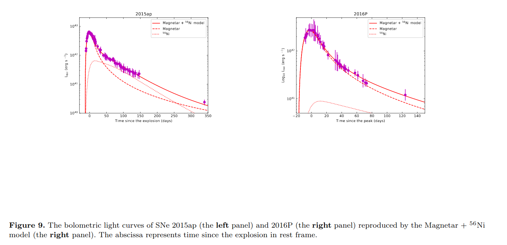
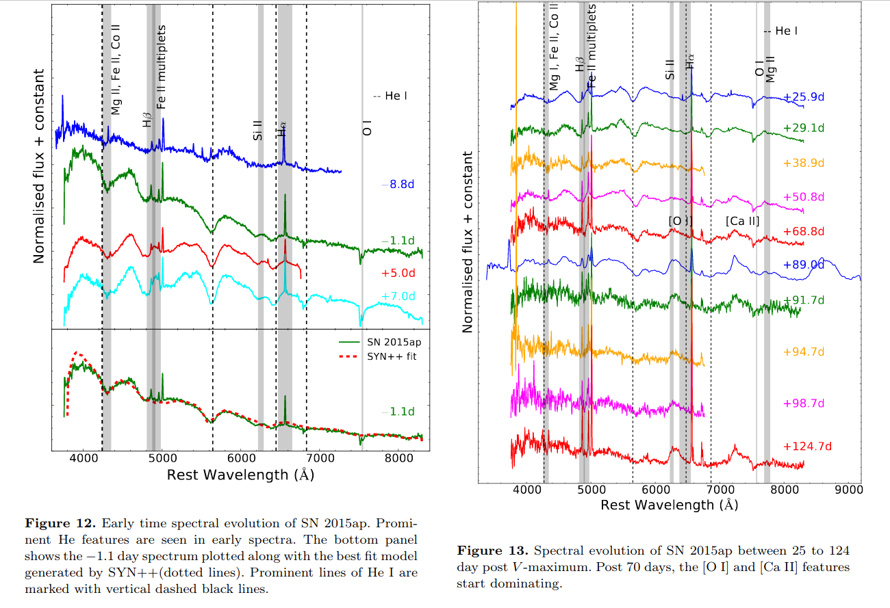
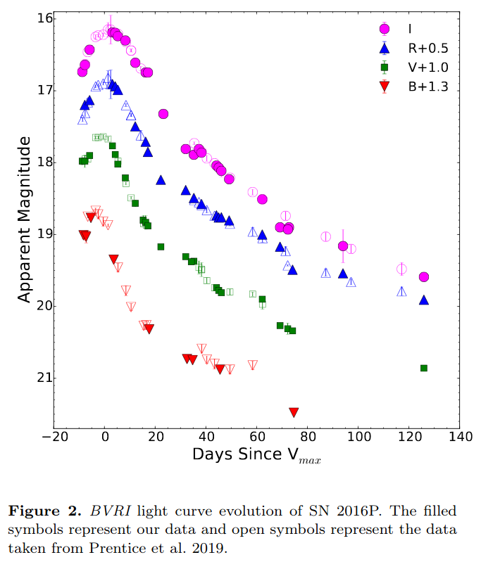
中相关：
https://arxiv.org/abs/
Authors: J.-B. Vielfaure, S. D. Vergani, J. Japelj et al.
Comments: 13 pages, 9 figures. Abridged abstract. Accepted for publication in A&A
Context. The identification of the sources that reionized the Universe and their specific contribution to this process are key missing pieces of our knowledge of the early Universe. Faint star-forming galaxies may be the main contributors to the ionizing photon budget during the epoch of reionization (EoR), but their escaping photons cannot be detected directly due to inter-galactic medium opacity. Hence, it is essential to characterize the properties of faint galaxies with significant Lyman continuum (LyC) photon leakage up to z∼4 to define indirect indicators allowing analogs to be found at the highest redshift.
Aims. Long gamma-ray bursts (LGRB) explode typically in star-forming regions of faint, star-forming galaxies. Through LGRB afterglow spectroscopy it is possible to detect directly LyC photons. Our aim is to use LGRBs as tools to study LyC leakage from faint, star-forming galaxies at high redshift.
Methods. Here we present the observations of LyC emission in the afterglow spectra of GRB 191004B at z=3.5055, together with those of the other two previously known LyC-emitting LGRB (GRB 050908 at z=3.3467, and GRB 060607A at z=3.0749), to determine their LyC escape fraction and compare their properties.
Results. From the afterglow spectrum of GRB 191004B we determine a neutral hydrogen column density at the LGRB redshift of , and negligible extinction (=0.03±0.02 mag). The only metal absorption lines detected are and . In contrast to GRB 050908and GRB 060607A, the host galaxy of GRB 191004B displays significant Ly α emission. From its Ly α emission and the non-detection of Balmer emission lines we constrain its star-formation rate (SFR) to 1≤SFR≤4.7 . We fit the Ly α emission with a model and find parameters values consistent with the observed ones. The absolute (relative) LyC escape fractions we find for GRB 191004B, GRB 050908 and GRB 060607A are of (), () and (), respectively. We compare the LyC escape fraction of LGRBs to the values of other LyC emitters found from the literature, showing that LGRB afterglows can be powerful tools to study LyC escape for faint high-redshift star-forming galaxies. Indeed we could push LyC leakage studies to much higher absolute magnitudes. The host galaxies of the three LGRBpresented here have all >−19.5 mag, with the GRB 060607A host at mag. LGRB hosts may therefore be particularly suitable for exploring the ionizing escape fraction in galaxies that are too faint or distant for conventional techniques. Furthermore the time investment is very small compared to galaxy studies.
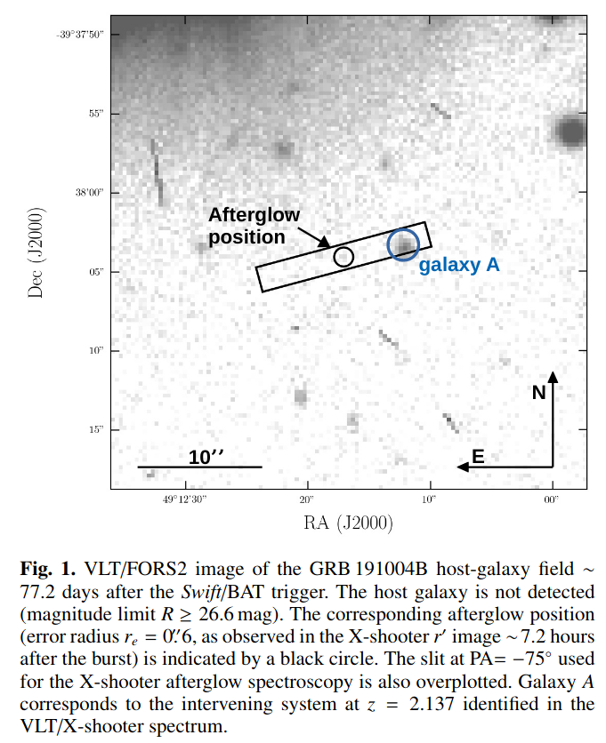
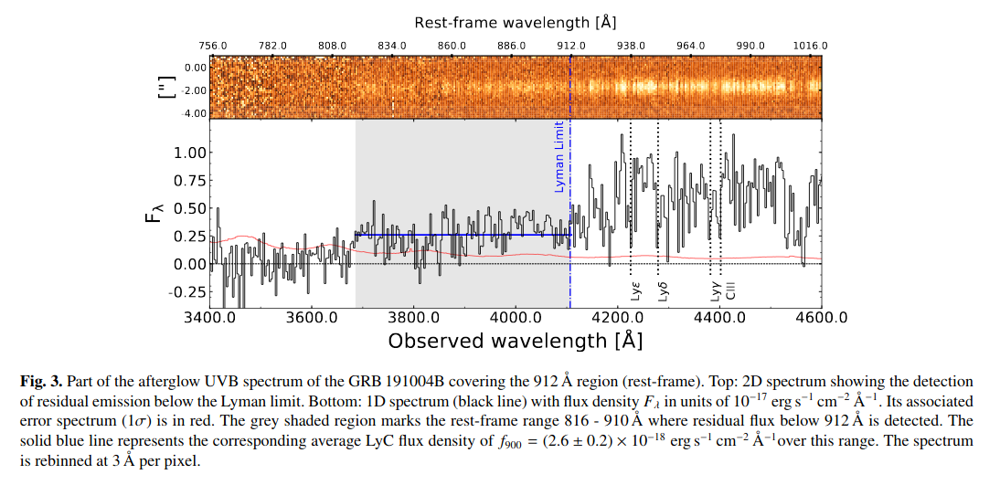
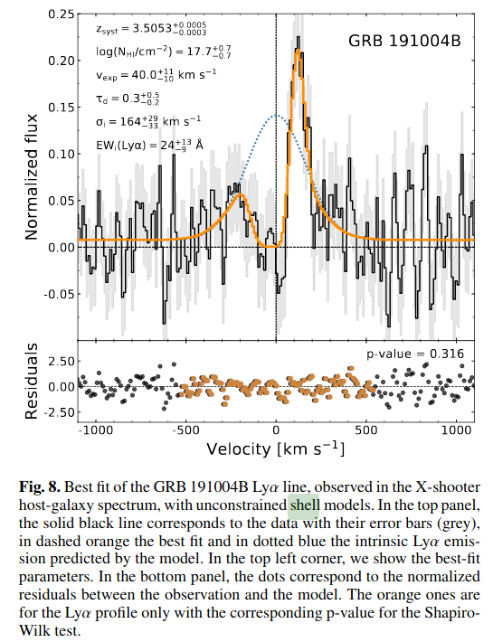
https://arxiv.org/abs/2006.09375
Authors: Patrick R. Miles, Eric R. Coughlin, C. J. Nixon
Comments: Accepted for publication in The Astrophysical Journal, 13th June 2020. 11 pages, 8 figures
A tidal disruption event (TDE) occurs when a star plunges through a supermassive black hole's tidal radius, at which point the star's self-gravity is overwhelmed by the tidal gravity of the black hole. In a partial TDE, where the star does not reach the full disruption radius, only a fraction of the star's mass is tidally stripped while the rest remains intact in the form of a surviving core. Analytical arguments have recently suggested that the temporal scaling of the fallback rate of debris to the black hole asymptotes to for partial disruptions, effectively independently of the mass of the intact core. We present hydrodynamical simulations that verify the existence of this predicted, scaling. We also define a break timescale -- the time at which the fallback rate transitions from a scaling to the characteristic scaling -- and measure this break timescale as a function of the impact parameter and the surviving core mass. These results deepen our understanding of the properties and breadth of possible fallback curves expected from TDEs and will therefore facilitate more accurate interpretation of data from wide-field surveys.
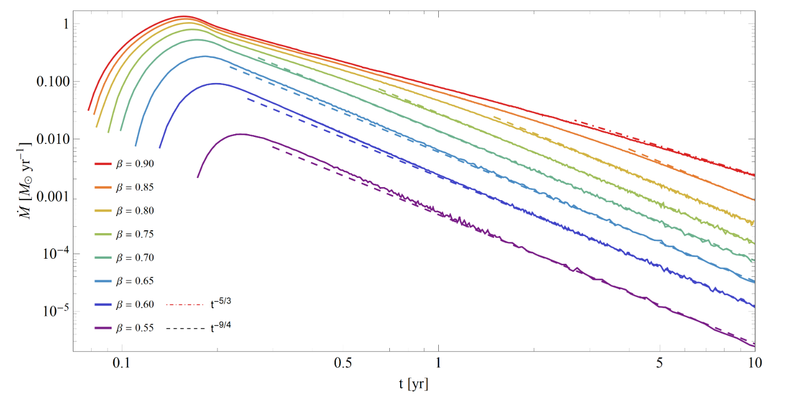
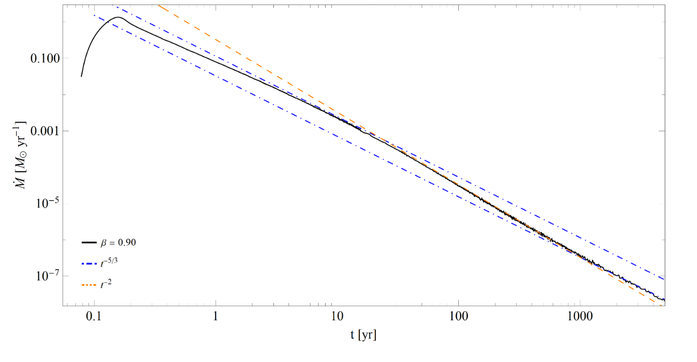
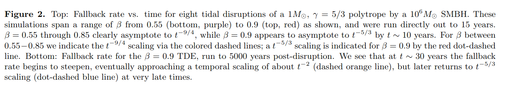
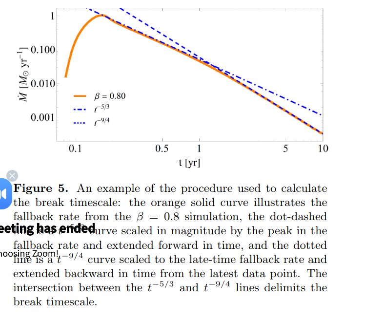
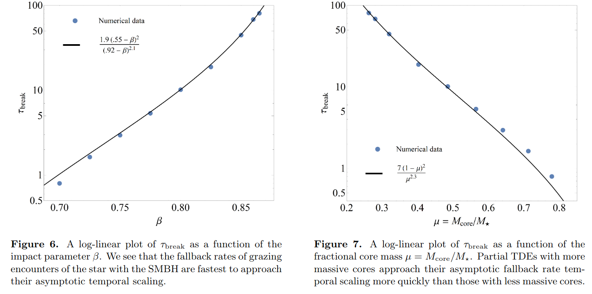
低相关：
https://arxiv.org/abs/2006.09680
Authors: Jun-Jie Wei, Xue-Feng Wu
Comments: 11 pages, 3 figures, 1 table. Accepted for publication in RAA
A nonzero-mass hypothesis for the photon can produces a frequency-dependent dispersion of light, which results in arrival-time differences of photons with different frequencies originating from a given transient source. Extragalactic fast radio bursts (FRBs), with their low frequency emissions, short time durations, and long propagation distances, are excellent astrophysical probes to constrain the rest mass of the photon . However, the derivation of a limit on is complicated by the similar frequency dependences of dispersion expected from the plasma and nonzero photon mass effects. If a handful measurements of redshift for FRBs are available, the different redshift dependences of the plasma and photon mass contributions to the dispersion measure (DM) might be able to break dispersion degeneracy in testing the photon mass. For now, nine FRBs with redshift measurements have been reported, which can turn this idea into reality. Taking into account the DM contributions from both the plasma and a possible photon mass, we use the data on the nine FRBs to derive a combined limit of , or equivalently at 68% confidence level, which is essentially as good as or represents a factor of 7 improvement over previous limits obtained by the single FRBs. Additionally, a reasonable estimation for the DM contribution from the host galaxy, DM, can be simultaneously achieved in our analysis. The rapid progress in localizing FRBs will further tighten the constraints on both and DM.
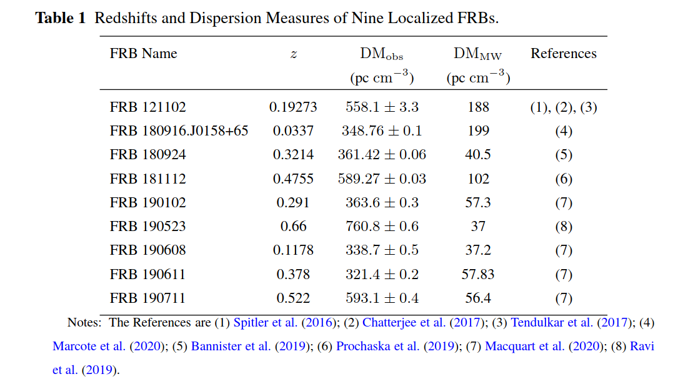